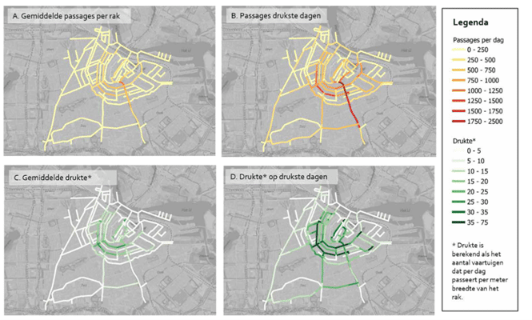
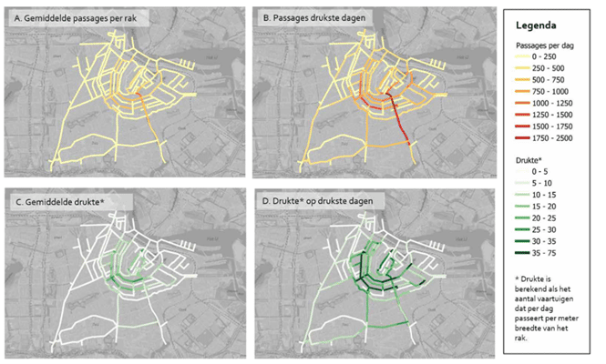

Assignment 1
The Municipality is worried that the canal- and support boats might pollute the air with theirdiesel engines. Since the Municipality wants to create ideal conditions for the swimmers so
they can set records (always nice for PR), it is your task to figure out if their concern is
warranted and what should or could be done to improve conditions. Next to that, Amsterdam
wants to advertise this event as a Neutral Energy EventⒸTM (NEE).
- How many of the canal boats currently in use are diesel/fossil fuel driven and how
many boats are electrical driven?
- Are there peak times for the canal boats?
- Try to compare the energy use of the canal boats to some other activities in the city.
- Use canal boats more or less energy in relation to their carbon footprint compared to these other activities?
- Would you consider it economically feasible?
- How many support boats and vehicles are needed for the Paralympics event only.
- If only clean energy can be used, how many solar panels or wind turbines are needed?
- Is it possible to accommodate these facilities within the city?
- Would their be any effect on the water quality if there are less/no canal boats using
fossil fules?
Results
We were unable to find data that showed the water quality of the canals in Amsterdam. To address this, we analyzed various datasets.Approach:
We created a map of Amsterdam to overlay the datasets. This enabled us to determine which canals are least polluted.
Noise Analysis:
We initially assessed the noise levels, particularly focusing on those exceeding 65 dB. This noise is largely produced by car traffic, providing a clear indication of areas in central Amsterdam with the heaviest traffic. Locations with high traffic are more susceptible to potential leaks of diesel and gasoline into the water.
NO2 Pollution:
We also examined Amsterdam's air quality. For CO2, PM12, PM25, and soot, there wasn't a significant variation between different areas or neighborhoods. However, there were notable differences in NO2 levels. Excessive NO2 in the water can cause oxygen deficiency, leading to fish mortality. Inhalation of high amounts of NO2 can result in cardiovascular diseases and respiratory issues for humans. While the levels of these harmful substances are generally high throughout Amsterdam, certain areas exhibited exceptionally high values. These areas are highlighted on our map. Ideally, the desired value should be below 8 micro g/l.
Canal Boats and Water Quality:
Another significant pollutant affecting water quality is the presence of canal boats. Their exhaust fumes negatively impact water health. We categorized the boats based on size: those 16 meters or larger and those less than 10 meters. Boats that didn't fit these criteria weren't visible on our map and therefore excluded. Interestingly, a considerable number of boats were unmanned, posing potential disruptions during swimming competitions. For this reason, these boats were also included on our map.
Traffic intensity of canal boats
The traffic intensity of boats can also be viewed per location in the canals of Amsterdam. The municipality mapped this out, using the data of the vignette readers from April 2022 to September 2022 and in the ten busiest days of the year. The maps, seen in figure 3, show where the most boats can be found.
Results:
In Figure 2, we layered the various datasets. This provides an understanding of which Amsterdam canals are most likely to be polluted and which are least. From this analysis, our 5 km route was derived.
Data Source:
All data utilized were sourced from national or municipal databases presented in map form. Consequently, the data isn't stored numerically. The information was composed of lines, areas, and surfaces. We didn't incorporate hyperplanes as our maps are two-dimensional. As these maps represent current conditions, the corresponding website is updated daily.
Figure 1: Traffic intensity of canal boats in A) the fairing
season (Sept-April), B) the 10 busiest days of the year, C)
relative intensity the fairing season, and D) relative intensity
in the ten busiest days of the year


Figure 2: layered datasets.
Click to view figure 2
Click to view figure 2
Literature
European Parliament, Council of the European Union. (2014, january 1). Directive 2006/7/EC of the European Parliament and of the Council of 15 February 2006 concerning the management of bathing water quality and repealing Directive 76/160/EEC. Document 02006L0007-20140101. http://data.europa.eu/eli/dir/2006/7/2014-01-01Gemeente Amsterdam Klaas-Bindert de Haan. (n.d.-a). Geluidskaart 2021. https://maps.amsterdam.nl/geluid/
Gemeente Amsterdam Klaas-Bindert de Haan. (n.d.-b). Luchtkwaliteit - NO2-metingen. https://maps.amsterdam.nl/no2/
Informatiepunt Leefomgeving (IPLO). (n.d.) Zwemmen in Oppervlaktewater. Accessed at 17-10-2023 via https://iplo.nl/thema/water/gebruiksfuncties-water/zwemmen-oppervlaktewater/
Legret, M., & Pagotto, C. (1999). Evaluation of pollutant loadings in the runoff waters from a major rural highway. Science of the Total Environment, 235(1-3), 143-150. https://doi.org/10.1016/S0048-9697(99)00207-7
Smit, C.E., Moermond, C.T.A., Ocké, M., te Biesebeek, J.D. (2012). Water quality standards related to human exposure in the Water Framework Directive: Considerations on fish consumption and Swimming. (Letter Report 60135701). National Institute for Public Health and Environment (RIVM). https://www.rivm.nl/bibliotheek/rapporten/601357011.pdf